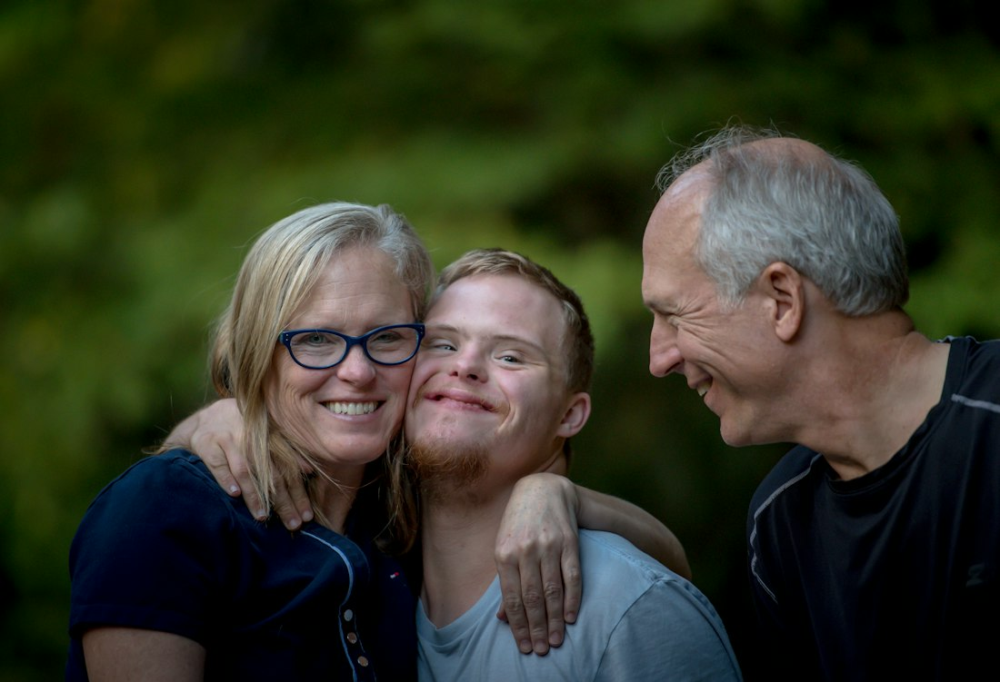

Care begins with understanding the person.
Our approach brings together individual choice, cultural respect and practical support.
A person, not just
a set of care needs.
Next of Kin Care provides individualised support for people living with permanent or temporary disability, recovering from injury and navigating ageing.
Our approach respects each person’s right to choose. Support is shaped around individual goals, preferences and daily life.
We recognise that language and cultural understanding matter when accessing care. Talk to our team about your language and cultural preferences.

What we work towards.
Our vision
People with disability living fulfilling, independent lives, with opportunities to grow and connect.
Our mission
Compassionate, person-centred support that respects individual needs and helps people pursue their goals.
Empowerment & choice
Support for independence, confidence and informed decisions.
Inclusion & respect
Recognition of each person’s strengths, culture and individuality.
Compassion
An empathetic approach that values dignity and wellbeing.
Integrity
Honesty, transparency and accountability in our relationships.
Collaboration
Working with individuals, families and other service providers.
Excellence
A commitment to improving support as people’s needs evolve.